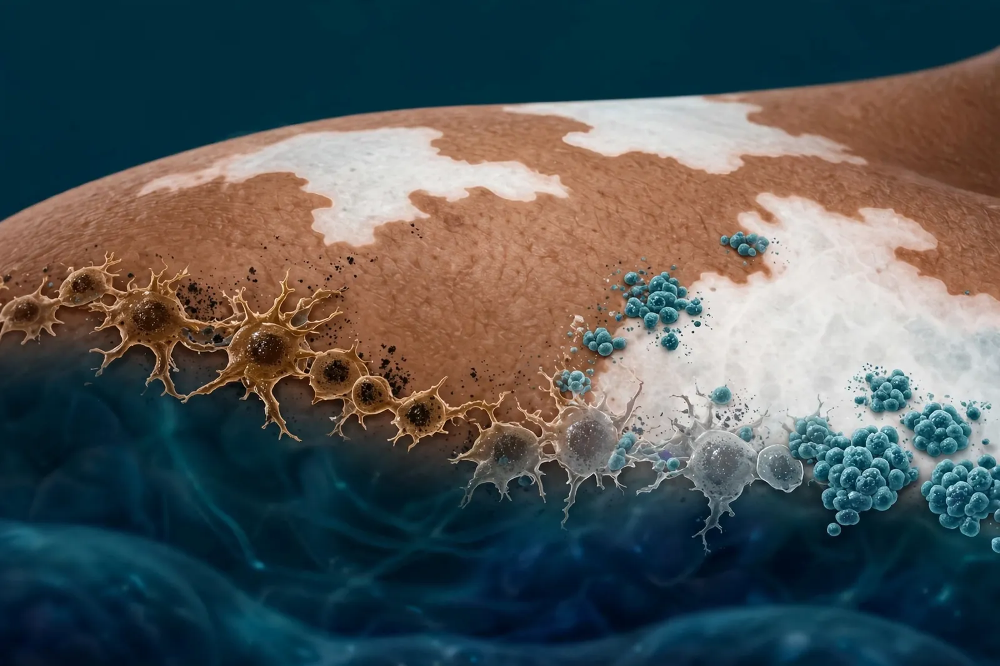

01
2022 was the turning point
Before that, no FDA-approved drug claimed repigmentation. Ruxolitinib cream changed the topical landscape in 2022.
Access required
This site is shared with selected partners ahead of public release. Enter your access code to view the platform and research material.
Disease brief 05 — Melanocyte autoimmunity
Vitiligo is not contagious and not a hygiene problem. A melanocyte-specific immune response destroys the cells that make pigment. Since 2022 the treatment landscape has changed.

Vitiligo · MelanocytesFigures depend on definition and ascertainment. The premise of this brief is that definition decides the answer.
The 2026 material in this brief — upadacitinib's first systemic approvals in the EU (July 2026) and the US (November 2026), the 2026 NAAF/AHRS oral-JAK position and NICE TA1140 — is recorded from secondary reporting and summary sources, not from primary labels or guideline text reviewed here.
A disease without an approved drug became a systemic-therapy race in four years. Response rate, relapse and price remain unresolved.
Before that, no FDA-approved drug claimed repigmentation. Ruxolitinib cream changed the topical landscape in 2022.
Three oral JAK inhibitors reported positive phase 3 results. Vitiligo is now a disease with systemic options.
Per secondary reporting, upadacitinib received its first systemic approval in the EU in July 2026 and in the US in November.
About 40% relapse within 12 months of stopping. Durability, not initial response, is the question.
F-VASI and T-VASI quantify facial and total repigmentation; both trials and markets move on them.
Once repigmentation is achieved, how long can it be kept? Competition is shifting from restoring colour to retaining it.
The IFN-γ – JAK–STAT – CXCL10 axis is central. Its clarity is why JAK inhibitors work — and where next-generation targets begin.
An environmental factor that raises melanocyte vulnerability
Polygenic risk across immune and pigment genes
New lesions at sites of trauma or friction
| Feature | Segmental | Non-segmental |
|---|---|---|
| Distribution | Unilateral · dermatomal | Bilateral, symmetrical |
| Course | Tends to stabilise after 6–24 months | Chronic, unpredictable |
| Comorbidity | Fewer systemic autoimmune conditions | More autoimmune comorbidity |
| Treatment | Largely excluded from drug trials; surgery fits better | The target of essentially all drug trials |
Pooling the two distorts both trial interpretation and market size.
Two onset peaks — before 10 and around 30. Half of non-segmental cases begin before 20.
The widely quoted 0.5–2% and 65–95 million are upper-bound or advocacy estimates. Ascertainment changes the answer; pooled point prevalence is 0.40%.
Hospital-based 1.8% uses visitors as the denominator; it is not general-population prevalence.
Lifetime physician diagnosis; adults 0.67% (37.1M), children 0.24% (5.8M), self-report upper bound 43.6M.
Women / men — no sex difference
Children / adults
West Asia — highest
East Asia — lowest
Hospital-visit prevalence · 2015 NHIS (Lee, Yonsei Med J)
Incidence (2019), lower than the US at 61.0 per 100,000 (2017)
Hospital-visit patients in a population of 51 million — small share does not mean no market
Severity is not organ failure. It is defined by visibility, progression and psychosocial burden — greatest with facial or hand lesions, larger body surface area and darker skin.
VALIANT · n=3,541 · 17 countries. Burden was greater with BSA above 5%, Fitzpatrick IV–VI and facial or hand lesions.
Pooled analysis of 29 studies, n=2,530.
Moderate-to-severe quality-of-life impairment 47%; high stress 67%.
The strongest associations are thyroid disease and alopecia areata; TSH plus thyroid antibodies give the highest screening yield.
Topical, phototherapy, systemic and surgical options are combined by extent and site. Combinations consistently outperform monotherapy.
| Treatment | Position | Limit |
|---|---|---|
| Topical corticosteroid | First line for limited BSA | Risk of atrophy |
| Tacrolimus | Face, flexures, maintenance | Slow, burning, off-label |
| NB-UVB 311 nm | Reference standard for widespread disease; 2–3 sessions weekly for months | Time, access, relapse |
| Excimer 308 nm | Localised and facial lesions | Cost and access |
| Ruxolitinib cream 1.5% | First FDA approval 2022; non-segmental, age 12+ | Twice daily, BSA limit, cost, slow (24–52 weeks), relapse |
| Surgery · RECELL / grafting | Stable segmental or localised non-segmental | Invasive; specialist centres |
| Depigmentation | Last resort | Irreversible |
Improvement continues to week 52.
Where the repigmentation indication began.
Facial non-segmental disease, age 12+, after topical failure.
≥50% repigmentation with JAK plus NB-UVB — meta-analysis
Excimer plus oral JAK — absolute improvement, RCT n=251
F-VASI75 with NB-UVB plus ruxolitinib (Incyte)
The IFN-γ – JAK–STAT – CXCL10 axis is no longer a hypothesis. The next questions are durability, safety and remission strategies beyond it.
| Agent | Mechanism | Trial | Result / status | Note |
|---|---|---|---|---|
| Upadacitinib | Oral JAK1 | Viti-Up-1 / 2 | Week 48 F-VASI75 25% / 23% vs 6% / 7%; T-VASI50 19% / 21% vs 6% / 6% | Week 76: 55.1% / 47.4% (up from 33.1% / 27.6%); numerical advantage with NB-UVB. |
| Ritlecitinib | Oral JAK3 / TEC | TRANQUILLO-2 / TRANQUILLO | TRANQUILLO-2 F-VASI75 21.86% (100 mg) vs 2.40%; T-VASI50 13.02% vs 2.40% | TRANQUILLO F-VASI75 12.47% (50 mg) vs 2.48%; rising to week 52 with no plateau. |
| Povorcitinib | Oral JAK1 | STOP-V1 / V2 | Week 52 F-VASI75 18.9% vs 6.8% / 3.1% | Published in Nature Medicine, 2026 |
| Afamelanotide | α-MSH analogue · CUV105 | Phase 3 · n=200 · 37 sites | NB-UVB combination vs NB-UVB alone | Topline 2H 2026; Fitzpatrick III–VI; possibly from 4 weeks; hyperpigmentation concern in lighter skin. |
| TEV-53408 | Anti-IL-15 | Phase 1b positive (Sep 2026) → 2b (Q4 2026) | Testing the durability hypothesis | $500M royalty (Jan 2026; $75M in vitiligo); durability unproven. |
| AMG714 | Anti-IL-15 | REVEAL · Phase 2 | Completed May 2025; results not disclosed | No published result as of Jan 2026. |
| FB102 | Anti-CD122 / FcRn | Phase 1b vitiligo ongoing | Topline 1H 2026 | Positive phase 2 in celiac disease (Oct 2026) |
| Zasocitinib | Oral TYK2 | Phase 2 dose-ranging | Recruiting since Aug 2025 | |
| Deucravacitinib | Oral TYK2 + NB-UVB | Phase 2/3 · NCT06327321 | Phototherapy combination design | |
| Anifrolumab | Anti-IFN-I + NB-UVB | Phase 2 · NCT05917561 | Differentiation on the IFN-I pathway | |
| CGB-600 | DNA aptamer · IFN-γ | Phase 2 (Oct 2025) · n=36 · facial non-segmental | Topline Q3 2026 | |
| VYN201 | Topical BET inhibitor | Phase 2b | Missed target Jul 2025; development stopped | |
| RECELL | Surgical · cell suspension | Device · FDA 2023 | ≥80% repigmentation at 6 months in 36% | For stable localised lesions |
The 2025 consensus range is about $1.2–1.8B, rising to roughly $1.9–3.0B by 2034. Scopes differ by publisher; single-figure citation is hazardous.
2025 → 2034 · CAGR 5.32%
2025 → 2034 · CAGR 5.8%
2025 → 2034 · CAGR 3.51%
Base year · CAGR 13%
Base year → 2034 · CAGR 8.7%
Total; 7MM alone $402M → $915M (2034)
The platform page card shows $1.84B (Fortune Business Insights, 2025), inside the $1.15–1.9B range above. Opzelura's $508M (2024) includes atopic dermatitis and the $8.2B pigment-disorder total is not vitiligo; neither is added here.
Per patient per year. Today this is a topical-and-phototherapy economy; oral JAK must create a new price tier through F-VASI75, T-VASI50 and quality of life in extensive disease.
A clinical win is not a reimbursement win. Price and durability data decide access.
The opportunity is real, but response rates demand humility: 19–25% F-VASI75 at 48–52 weeks means most patients do not yet reach the target.
Epidemiology follows meta-analyses and Lancet modelling; clinical figures come from trial disclosures and regulators; market figures are analyst estimates. Do not compare across trials.
General information only, not medical advice. Market figures vary widely with definition and source; verify primary material before official or IR use. Trial results here follow press and summary sources; confirm final approval and reimbursement terms with regulators.
The Nextab, Inc. Th1 programme is preclinical; this brief does not claim validity of the programme in this indication.